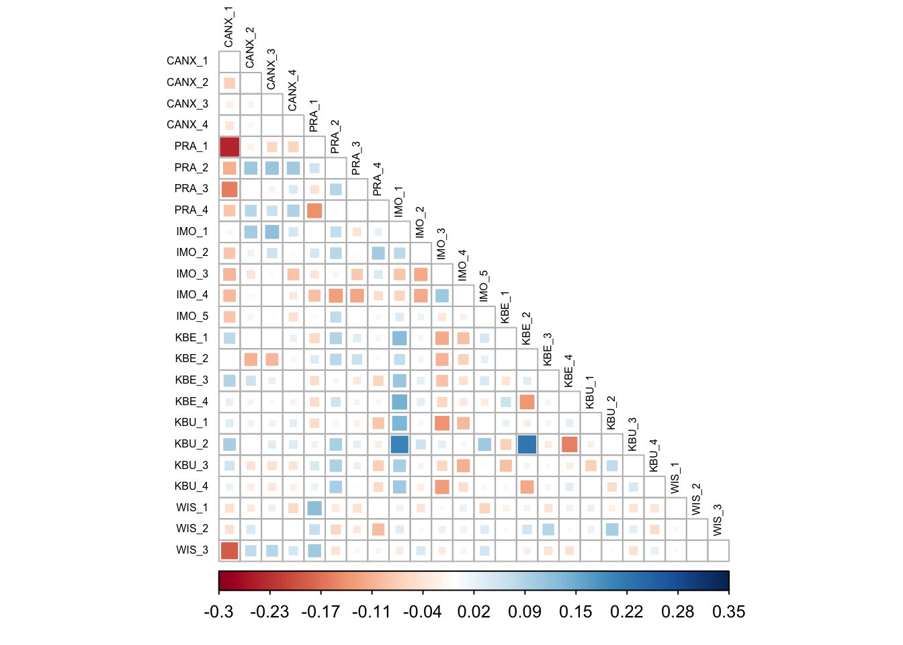

| χ² | RMSEA | cfi | srmr | ||||
|---|---|---|---|---|---|---|---|
| Wert | df | p | Wert | CIlow | CIhigh | ||
| 793.01 | 268.00 | 0.00 | 0.06 | 0.05 | 0.06 | 0.91 | 0.08 |
Statistische Analyse
Strukturgleichungsmodell
Basierend auf Camil (Makransky und Petersen 2021) und der Annahme, dass das Alter und die Ängstlichkeit vor Computern einen Einfluss auf das Lernen hat, wurde das folgenden Modell aufgestellt.

Überprüfung des Messmodells
Das Messmodell beinhaltet sechs latente Variablen, welche durch 24 manifeste Variablen geschätzt werden.
CANX (Computer Anxiety) - Ängstlichkeit vor Computern
PRA (Presence) - Präsenz im virtuellen Raum
IMO (Intrinsic motivation) - Intrinsische Motivation
KBE (Extraneous Cognitive load Interaction) - Kognitive Belastung, Interaktion
KBU (Extranous Cognitive load Environment) - Kognitive Belastung, Umgebung
WIS (Drei multiple choice Fragen zur Theorie) -
Die Analysen wurden mit dem lavaan Package durchgeführt (Rosseel 2012).
Die Gütekriterien des Messmodels sind in der Tabelle 1 aufgeführt und weisen auf eine akzeptable Passung des Models hin (Hu und Bentler 1999) (CFI=0.96 , GFI=0.99, RMSEA=0.04, SRMR=0.06). Der \(\chi^2\)-Test (\(\chi^2\)(237)=457.23, p <0) fällt signifikant aus, was bei grossen Stichproben allerdings nicht ungewöhnlich ist, da diese direkt in die Teststatitsik miteinfliesst (Eid, Gollwitzer, und Schmitt 2017).
| χ² | RMSEA | srmr | cfi | tli | gfi | agfi | ||||
|---|---|---|---|---|---|---|---|---|---|---|
| Wert | df | p | Wert | CIlow | CIhigh | |||||
| 457.23 | 237.00 | 0.00 | 0.04 | 0.04 | 0.05 | 0.06 | 0.96 | 0.96 | 0.99 | 0.99 |
Tabelle 1:
Gütekriterien des Messmodels
Äquivalenztest
Diese CutOff Werte werden auch in Frage gestellt, da sie beeinflusst werden können von der Stichprobengrössen, Modellcharakteristika wie Non-Normalität, Anzahl der Indikatoren oder der Magnitude der Faktorladungen (West u. a. 2023). Eine mögliche Korrektur bieten Marcoulides und Yuan (2017) mit einem Äquivalenztest.
Der korrigierte T-Size Wert für den CFI beträgt 0.945 und der RMSA 0.048. Verglichen mit den ebenfalls korrgierten T-Size korrigierten Cutoff-Werten (vgl. Tabelle 2) kann das Modell als “close” eingeschätzt werden.
| CFI | RMSEA | |
|---|---|---|
| mediocre | 0.880 | 0.107 |
| fair | 0.902 | 0.086 |
| close | 0.936 | 0.056 |
| excellent | 0.981 | 0.021 |
Tabelle 2:
Cut-Off Werte für den Äquivalenztest
Latente Variablen des Messmodells
Abbildung 1 zeigt die latenten Variablen des Messmodells mit den entsprechenden standardisierten Faktorladungen. Alle Ladungen erreichten ein signifikantes Resultat (p<.001).

Betrachtet man die standardisierten Kovarianzen zwischen den latenten Faktoren des Modells (Abbildung 2) fällt besonders die zwischen den beiden Skalen KBE und KBU auf. Die Kovarianz beträgt 0.264 (SE=.036, z = 7,421, p < .001). Die standardisierte Kovarianz war mit 0,940 bemerkenswert hoch und deutet auf eine starke lineare Beziehung zwischen diesen beiden Konstrukten hin. Alle Kovarianzen sind signifikant (p<.01) ausser CANX~~PRA (p<.085) und CANX~~IMO (p<.795).

Modifikationsindices
Die Modifikationsindizes (vgl. Tabelle 3) deuten auf mögliche Querladungen zwischen der kognitiven Belastung in VR-Settings (KBU und KBE) und den Items der Skala zur intrinsischen Motivation (IMO_1 und IMO_3) hin. Dies könnte darauf hindeuten, dass bestimmte Items der Skala zur intrinsischen Motivation auch Aspekte der kognitiven Belastung erfassen oder dass es eine gewisse Überschneidung zwischen den Konstrukten gibt. Die vermutete inverse Beziehung zwischen PRA und CANX_1 könnte darauf hindeuten, dass mit zunehmender Präsenz in der VR-Umgebung der Wert von CANX_1 sinkt oder umgekehrt. Aufgrund des sehr guten Modell Fits sind allerdings keine Anpassungen am Modell vorzunehmen, allerdings stellt sich die Frage nach der internen Kongruenz oder Reliabilität der Item-Skalen, besonders der Motivationsskala.
| lhs | op | rhs | mi | epc | sepc.lv | sepc.all | sepc.nox |
|---|---|---|---|---|---|---|---|
| KBU | =~ | IMO_1 | 54.44 | 0.44 | 0.25 | 0.23 | 0.23 |
| PRA | =~ | CANX_1 | 53.83 | −0.68 | −0.42 | −0.23 | −0.23 |
| KBE | =~ | IMO_1 | 51.59 | 0.51 | 0.25 | 0.23 | 0.23 |
| KBU | =~ | IMO_3 | 35.70 | −0.27 | −0.16 | −0.18 | −0.18 |
| KBE | =~ | IMO_3 | 34.81 | −0.32 | −0.16 | −0.18 | −0.18 |
Tabelle 3:
Modifikationsindices, fünf höchste Werte
Kovarianzen der Items
Die gefundenen Zusammenhänge der Items zeigen sich auch in der Kovarianzmatrix (Abbildung 3).

Items der Skala Intrinsische Motivation
| Item | g | h2 | u2 |
|---|---|---|---|
| IMO_1 | 0.79 | 0.63 | 0.37 |
| IMO_2 | 0.75 | 0.56 | 0.44 |
| IMO_3 | 0.65 | 0.42 | 0.58 |
| IMO_4 | 0.63 | 0.40 | 0.60 |
| IMO_5 | 0.43 | 0.18 | 0.82 |
Die Items der Skala lauten wie folgt:
Ich arbeite gerne mit dem Thema der Kuhhaltung. (IMO_1)
Es macht Spass Aktivitäten rund um das Thema Kuhhaltung durchzuführen. (IMO_2)
Das Thema der Kuhhaltung ist langweilig. (IMO_3)
Das Thema der Kuhhaltung interessiert mich überhaupt nicht. (IMO_4)
Ich würde das Thema der Kuhhaltung als sehr interessant bezeichnen. (IMO_5)
Diese Items wurden aus dem Englischen übersetzt und an das Thema der Kuhhaltung angepasst. Die Formulierung von IMO_1 ist nicht ideal, da die Wendung “arbeiten mit einem Thema” nicht sehr geläufig ist und wahrscheinlich mit dem Verb “beschäftigen” besser getroffen worden wäre.
Eine Analyse der Itemskala mit der Omega Funktion des psych Packages (William Revelle 2023) durchgeführt und zeigen eine akzeptable interne Konsistenz der Skala mit \(\omega\)=0.79 und \(\alpha\)=0.78. Desweiteren zeigen auch die Faktorladungen, dass das Item 1 sowohl die höchste Ladung, als auch die höchste Komunalität mit dem latenten Faktor der Skala aufweist (siehe Tabelle 4). Diesen Analysen folgend macht eine Anpassung des Items IMO_1 keinen Sinn.
Strukturmodell
Im folgenden Modell werden nun die Verbindungen zwischen den latenten Variablen aufgenommen und die manifesten Variablen Alter und Bildung werden als Indikatoren aufgenommen.
Literatur
Eid, Michael, Mario Gollwitzer, und Manfred Schmitt. 2017. Statistik und Forschungsmethoden Lehrbuch. Mit Online-Material. https://nbn-resolving.org/urn:nbn:de:101:1-2017110712245.
Hu, Li-tze, und Peter M. Bentler. 1999. „Cutoff Criteria for Fit Indexes in Covariance Structure Analysis: Conventional Criteria Versus New Alternatives“. Structural Equation Modeling: A Multidisciplinary Journal 6 (1): 1–55. https://doi.org/10.1080/10705519909540118.
Makransky, Guido, und Gustav B. Petersen. 2021. „The Cognitive Affective Model of Immersive Learning (CAMIL): A Theoretical Research-Based Model of Learning in Immersive Virtual Reality“. Educational Psychology Review 33 (3): 937–58. https://doi.org/10.1007/s10648-020-09586-2.
Marcoulides, Katerina M., und Ke-Hai Yuan. 2017. „New Ways to Evaluate Goodness of Fit: A Note on Using Equivalence Testing to Assess Structural Equation Models“. Structural Equation Modeling: A Multidisciplinary Journal 24 (1): 148–53. https://doi.org/10.1080/10705511.2016.1225260.
Rosseel, Yves. 2012. „Lavaan : An R Package for Structural Equation Modeling“. Journal of Statistical Software 48 (2). https://doi.org/10.18637/jss.v048.i02.
West, Stephen G., Wei Wu, Daniel McNeish, und Andrea Savord. 2023. „Model Fit in Structural Equation Modeling“. In, herausgegeben von Rick H. Hoyle, Second edition, 184–205. New York, NY: The Guilford Press.
William Revelle. 2023. „psych: Procedures for psychological, psychometric, and personality research“. Evanston, Illinois. https://CRAN.R-project.org/package=psych.